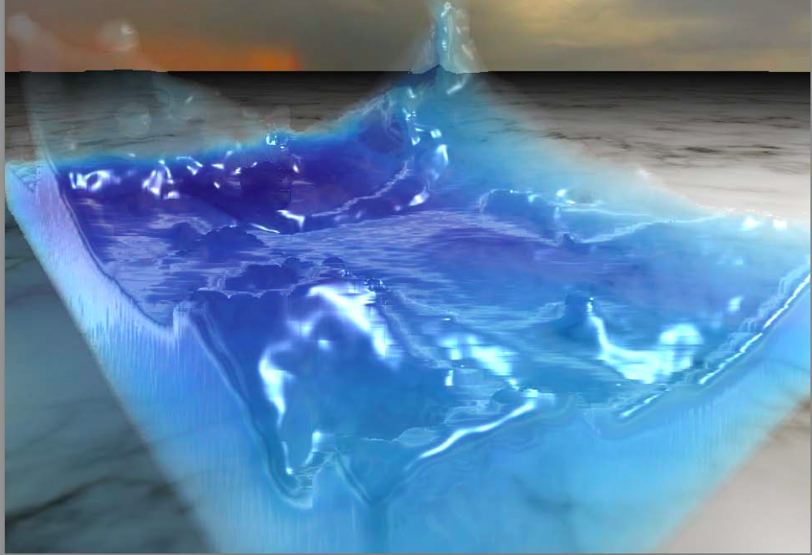

|

|
In this project, we will implement Position based fluids and an interactive simulator. The project composes of two main components. The first, calculate particles positions and velocities based on constraints with neighboring particles, external forces, incompressibility, tensile instability, vorticity confinement, and viscosity. The second, create an interactive simulator that allows user to apply wind, change water particles texture, and visualize water surface.